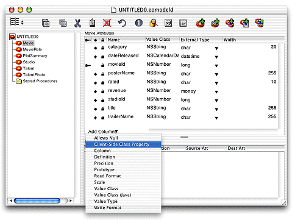

| PATH |

A model file provides a level of abstraction from the database. This enables you to write WebObjects applications that are not tied to a particular database implementation. To create a model file, you need to provide the EOModeler application connection information so that it can communicate with your database. In addition, you define the entities that make up your data model and map them to tables in your database. In EOModeler you also define the relationships between entities using the primary and foreign keys of the database tables. This section guides you through the steps required to accomplish all of these objectives.
If you don't want to learn how to create a model or if you're going to use an existing model, you can go to "Creating the StudioManager Project".
EOModeler
is located in the /Developer/Applications directory.
Navigate to that directory and launch EOModeler.
Choose Model > New.
Ensure that the JDBC adaptor is selected.
Click Next.
For this tutorial the
only information required is the URL. Enter jdbc:openbase://localhost/WOMovies in
the URL field.
Click OK.
In this wizard page, you can specify the degree to which the wizard configures your model.
The basic model the wizard creates contains
entities, attributes, and relationships. An entity is the part of
the database-to-object mapping that associates a database table
with an enterprise object class. For example, the Movie entity maps
rows from the MOVIE table to Movie objects. Similarly, an attribute
associates a database column with an instance variable. For example,
the title attribute in
the Movie entity maps the TITLE column of the MOVIE table to the title instance
variable of Movie objects.
A relationship is a link
between two entities that's based on attributes of the entities. For
example, the Movie entity has a relationship to the MovieRole entity
based on the movieId attribute
of each entity (although the attributes in this example have the
same name in both entities, they don't have to). This relationship
makes it possible to find all the movie roles in a movie.
How complete the basic model is depends on the completeness of the schema information inside your database server. For example, the wizard includes relationships in your model only if the server's schema information specifies foreign key definitions.
Using the options in this page, you can supplement the basic model with additional information. (Note that the wizard doesn't modify the underlying database.)
Select the "Assign primary keys to all entities" option.
Enterprise Objects Framework uses primary keys to uniquely identify enterprise objects and to map them to the appropriate database row. Therefore, you must assign a primary key to each entity you use in your application. The wizard automatically assigns primary keys to the model if it finds primary key information in the database's schema information.
Selecting this option causes the wizard to prompt you to choose primary keys that aren't defined in the database's schema information. If your database doesn't define them, the wizard later prompts you to choose primary keys.
Deselect the "Ask about relationships" option.
If there are foreign key definitions in the database's schema information, the wizard includes the corresponding relationships in the basic model. However, a definition in the schema doesn't provide enough information for the wizard to set all of a relationship's options. Selecting this option causes the wizard to prompt you to provide the additional information it needs to complete the relationship configurations. You'll add relationship information manually in this tutorial.
Deselect the "Ask about stored procedures" option.
Selecting this option causes the wizard to read stored procedures from the database's schema information, display them, and allow you to choose which to include in your model. Because the Studio Manager application doesn't require the use of any stored procedures, you don't need this option selected.
Deselect the "Use Custom Enterprise objects" option.
An entity maps a table to enterprise objects by storing the name of a database table (MOVIE, for example) and the name of the corresponding enterprise object class (a Java class, Movie, for example). When deciding what class to map a table to, you have two choices: EOGenericRecord or a custom class. EOGenericRecord is a class whose instances store key-value pairs that correspond to an entity's properties and the data associated with each property.
If you don't select the "Use Custom Enterprise objects" option, the wizard maps all your database tables to EOGenericRecord. Otherwise, the wizard maps all your database tables to custom classes. The wizard assumes that each entity is to be represented by a custom class with the same name. For example, a table named MOVIE has an entity named Movie, whose corresponding custom class is also named Movie. Use a custom enterprise object class only when you need to add business logic; otherwise use EOGenericRecord. See "Specifying Custom Enterprise Object Classes" for more information on enterprise objects.
Click Next.
For this tutorial the only tables required are MOVIE, MOVIE_ROLE, PLOT_SUMMARY, STUDIO, TALENT, and TALENT_PHOTO.
Select only the tables mentioned above. You need to use the Command key to make a noncontiguous selection.
Click Next.
Select movieId from Attributes list.
Click Next.
The MovieRole
entity has a compound primary key: movieId + talendId.
Therefore, the movieId and talentId attributes need to be selected.
Select the movieId and talentId attributes.
Click Next.
Select the movieId attribute.
Click Next.
Select the studioId attribute.
Click Next.
Select the talentId attribute.
Click Next.
Select the talentId attribute.
Click Next.
The wizard is done collecting information. It is now ready to create the model.
Click Finish.
You should now see a window similar to the one in Figure 2-1.
Figure 2-1 Model generated by the EOModeler wizard
Select the Movie entity in the entity browser.
If you do not
see a column with the ![[image: ../Art/clientsideclassproperty.gif]](../Art/clientsideclassproperty.gif) heading in the Movie Attributes
table view, you need to add it.
heading in the Movie Attributes
table view, you need to add it.
Choose Client-Side Class Property from the Add Column pull-down menu in the Movie Attributes table view.
If
you do not see a column with the
heading in
the Movie Relationships table view, you need to add it.
Choose Client-Side Class Property from the Add Column pull-down menu in the Movie Relationships table view.
Choose Model > Save.
You are presented with a Save As dialog. Name your model Movies.
Navigate to a directory where you want to store the model.
Click Save.
Close the model window.
By default, EOModeler makes class properties for all of an entity's attributes (except for non-database attributes that you add to the entity). When an attribute is a class property, it means that the property is included in your class definition and that it can be fetched from the database. To put it another way, only attributes that are marked as class properties become part of your enterprise objects.
You should mark as class properties only those attributes whose values are meaningful in the objects that are created when you fetch from the database. Attributes that are essentially database artifacts, such as primary and foreign keys, shouldn't be marked as class properties unless the key has meaning to the user and must be displayed in the user interface.
Eliminating primary and foreign keys as class properties has no adverse effect on how Enterprise Objects Framework manages enterprise objects in your application.
EOModeler indicates that an attribute is a server-side class
property with the
icon. Client-side class properties
have the
icon.
To remove the class property status from the Movie entity's studioId
attribute, follow these steps:
icons in the studioId's
row in the Movie Attributes table, so that they disappear.Close the model.
The model file you just created will be used as a template when you create the StudioManager project in "Creating the StudioManager Project". When you add the model to the project, Project Builder will store a copy of it in the project's directory. From then on, you'll be working with StudioManager's version of the model file. This way, you can create a master model of your database and, from it, generate customized versions for each project you develop.
© 2001 Apple Computer, Inc.